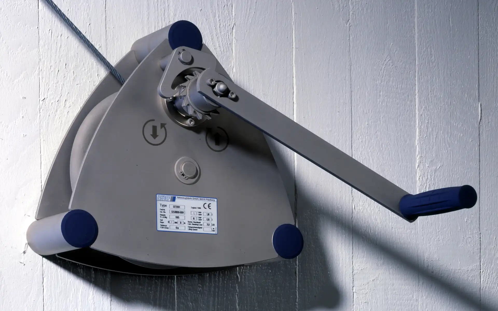
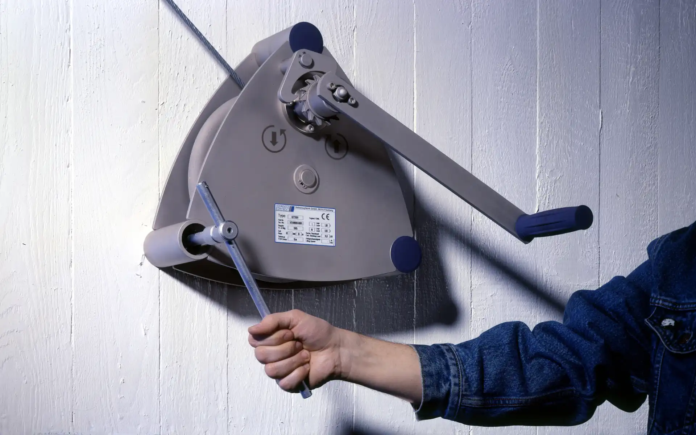

Wall-Mounted Winch Alpha LB
Pfaff-silberblau, 1996
Wandseilwinde Alpha LB
Pfaff-silberblau, 1996
The wall winch Alpha LB which is used for lifting and lowering of loads up to 1,000 kg, proves that
ecological requirements and costs must be no contradiction.
An intelligent lightweight construction reduces the material usage by 30% compared to its predecessor and
saves valuable resources. The wall mounting also serves as the housing. The stainless steel construction
is extremely weather-proof, easily recyclable and environmentally friendly in the production by
eliminating a galvanic surface treatment. An important advantage convenient for the user is that the cable
reel is open on all sides and the steel rope can exist at any position unimpeded.
The wall winch is very easy to use through the clear, unambiguous formal language and the use of
internationally comprehensible pictograms. The winch not only has a long service life; its timeless
design will remain up to date visually for years, as well.
Die Wandseilwinde Alpha LB, die zum Heben und Senken von Lasten bis 1.000 kg eingesetzt wird, beweist,
dass ökologische Anforderungen und Kostensenkung kein Widerspruch sein müssen.
Eine intelligente Leichtbaukonstruktion verringert den Materialeinsatz um 30% gegenüber dem
Vorgängermodell und schont wertvolle Ressourcen.Die Wandbefestigung ist gleichzeitig ein Teil des
Gehäuses. Die Edelstahlkonstruktion ist äußerst witterungsbeständig, leicht recycelbar und durch den
Wegfall einer galvanischen Oberflächenbehandlung auch in der Herstellung umweltfreundlich. Ein wichtiger
Vorteil für den Anwender ist, dass das Stahlseil nach jeder Richtung uneingeschränkt auslaufen kann.
Die Wandseilwinde ist durch ihre klare, eindeutige Formensprache und durch die Verwendung von
international verständlichen Piktogrammen sehr leicht zu bedienen. Sie ist nicht nur funktional
langlebig, gerade ihr bewusst schlichtes, zeitloses Design macht sie auch visuell beständig.


Images © Selić Industriedesign